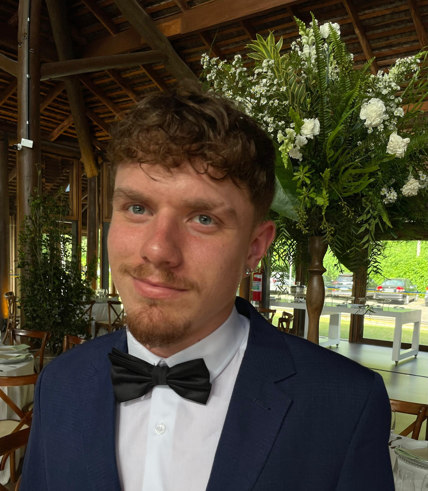
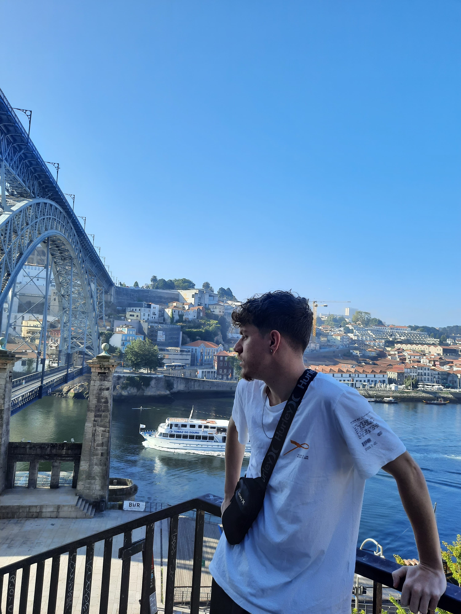

| Felipe Diffonte Schmidt |
- Software Developer | Mobile & Fullstack
Sou Desenvolvedor de Software focado em soluções multiplataforma e arquiteturas escaláveis. Formado em ADS e pós-graduando em Desenvolvimento Mobile, atuo profissionalmente com Kotlin Multiplatform, Swift e Go. Além do desenvolvimento, sou responsável pela administração de Business Intelligence no IMT, unindo técnica e estratégia de dados.

Formação Academica | Habilidades
Mobile Multiplataforma
Especialista em Kotlin Multiplatform (KMP), desenvolvendo interfaces nativas com Jetpack Compose e SwiftUI. Foco em performance e código compartilhado.
Backend & Cloud
Domínio de Go (Golang) e Node.js para APIs escaláveis. Experiência com infraestrutura serverless no Google Cloud (Cloud Run) e Docker.
Dados & BI
Administração completa de ecossistemas de BI. Experiência avançada em PostgreSQL, Firebase e modelagem de dados para tomada de decisão.

Filosofia de Trabalho.
Acredito que escrever código é apenas uma parte da engenharia de software. Minha atuação é guiada pela visão de produto e pela tomada de decisão baseada em dados (Data-Driven). Priorizo a construção de arquiteturas limpas e escaláveis, garantindo que o software não apenas funcione, mas seja fácil de manter e evoluir. No trabalho em equipe, trago uma comunicação direta e foco em performance, unindo as necessidades do negócio com as melhores práticas de tecnologia.
Interesses & Hobbies
Minha vida é como um quebra-cabeça cheio de coisas que gosto muito. Gosto de praticar esportes para me divertir. Também gosto de viajar. É algo que me deixa muito feliz, conhecendo lugares diferentes, culturas diferentes e aprendo muito com isso.